茉莉 · 家政机器人
蓝海晴在大学时期同好会一同制作的机器人，内部的系统是一个在“暗网”搞到的据说非常高质量的AI。茉莉在她们毕业后被同好会的另一个成员露佳·皮克西带去了拉姆齐生物科技的技术部门，在那里她变成了一个得力的助手。
使用主动技能后，防御力-3，移动速度+3，持续1轮。
每累计13点移动点数，交替使自身攻击力永久+1、防御力永久+1。
使用主动技能后，若下次移动的点数大于等于10，本回合攻击力+2，反之防御力+2。 停留在疾行地块后，主动技能冷却时间-2。
基础资料
PVE 特性
- 达到1星时攻击力+1、移动速度+1
- 达到2星时攻击力+2
- 达到3星时攻击力+1、移动速度+2
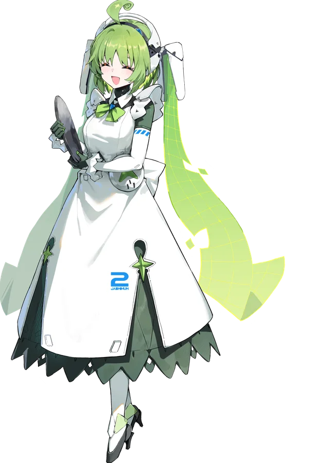
默认
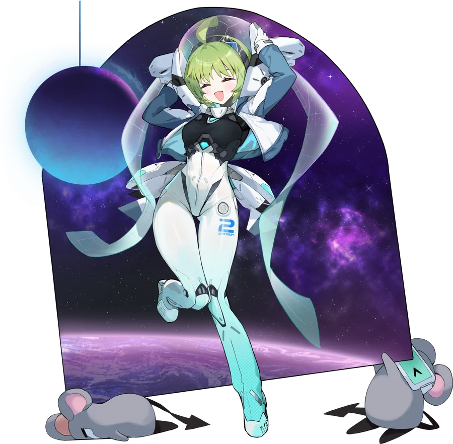
羁绊皮肤
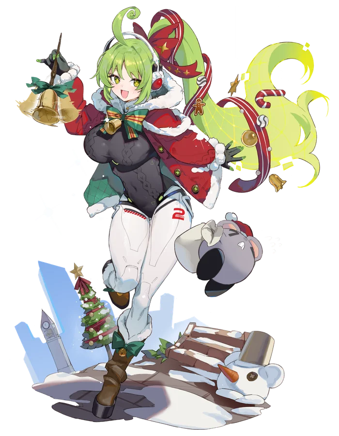
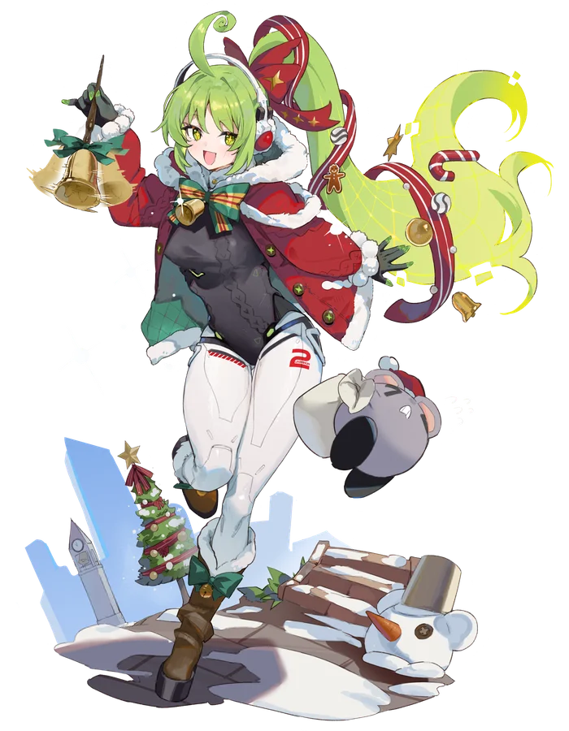
节日盛装
“呃，还有几分钟就过节了，但完全没有实感啊。”露佳伸了个懒腰。 “不过还要加班就很真实。”露佳下意识的吐槽道。 “马上就结束了。海晴他们说是半小时前就到我家了。” 想到这里露佳已经迫不及待想回家了。 “茉莉跑哪里去了？”露佳把杯子放下，准备用通信装置定位一下茉莉的位置。 就在此时，突然办公室的灯全部熄灭，露佳陷入了一片黑暗中。 “唉？停电？不对啊？这楼从来没停过电啊？”露佳在黑暗中拿起通信器准备紧急呼叫茉莉。 “啪嗒！”不远的地方传来了一声诡异的响声。 “什..什么东西！”只见一道绿光缓缓靠近露佳。 “咚咚！哒哒哒！！！”突然一张大脸凑到了露佳的脸上。 “啊啊啊啊啊啊啊啊！！！”露佳吓得坐在了地上。 此时灯光又亮了起来，茉莉正穿着穿着充满节日气氛的服装站在露佳的脸前。 “啊啊~露佳露佳~茉莉好看吗？”茉莉瞪着大眼睛看着坐在地上的露佳，她眼里满是想要被表扬的渴望。 “噗..哈哈哈哈哈，真是的…”露佳看见打扮成这样的茉莉突然笑出了声。 “好看，很有节日气氛。”露佳说道。 “嘿嘿，专门为你准备的。”茉莉高兴地使劲晃动手里的铃铛，并且用脸颊蹭着露佳的额头。 “嗯，谢谢。节日快乐。”露佳摸着茉莉的头说道。
冲浪海岸
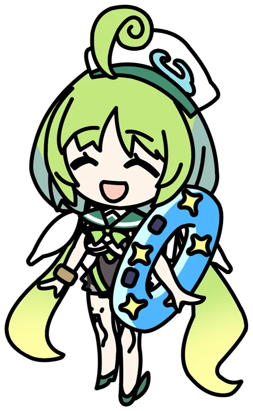
“防晒霜、防水袋、毛毯……” 露佳检查着去海边的装备，旁边的茉莉则在帮她整理物品。 “呃，这不是玲玲的冲浪板么，怎么还在这里？”露佳看到仓库里的冲浪板发出了疑问。 “冲浪板？”茉莉突然来了兴趣，眼睛亮了起来。 “就是用这个板子，可以在海上利用海浪漂浮滑行。” “我要玩！我要玩！”茉莉吵闹起来。 “你都没学过基本的知识，万一掉海里了我可救不起来你。”露佳否定了茉莉的想法，继续收拾东西。 “好了！学会了！”茉莉开启了网络下载模式，用了不到10秒的时间搜索完了网上所有的冲浪课程。 “呃，你这临时下载下来的有什么用啊。算了，反正明天玲玲也要去，让她教教你好了。就算你掉海里，那怪力女也能把你捞起来。” “好耶！玲玲教我！我一定会很快学会的！” 茉莉像只快乐的小狗一样开心地手舞足蹈。
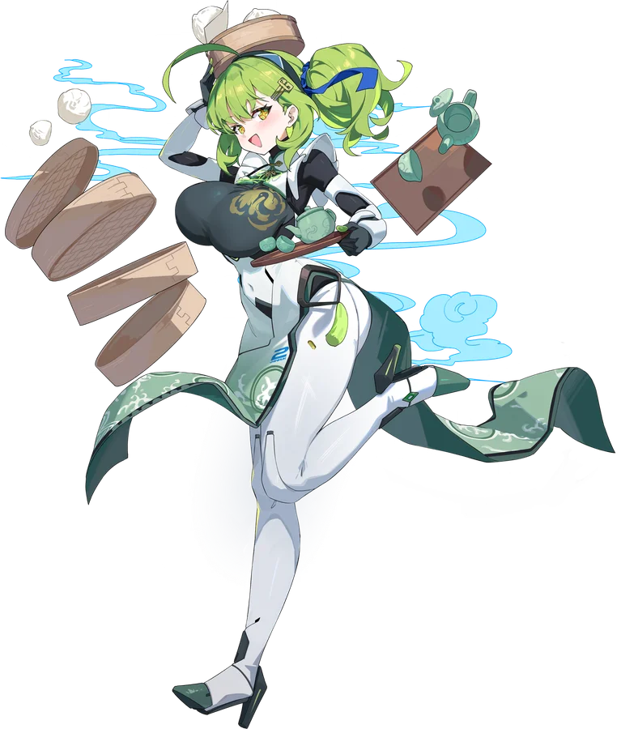
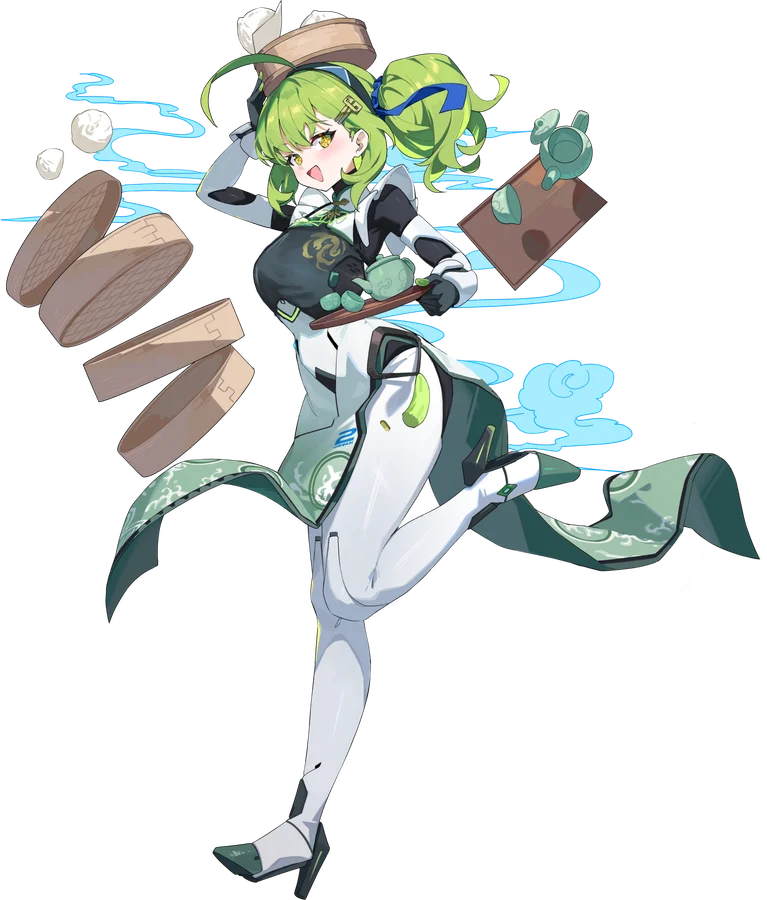
后厨能手
每隔几个月，凰区的社区活动会有几天是美食一条街。 各种各样的传统小吃在这几天里集中出现在大街小巷，为本就热闹的街区带来更多的人气。 茉莉作为住在附近社区的一员，当然也会作为志愿者加入到这个由社区共同举办的活动中。 不过，因为茉莉毛手毛脚熊孩子的属性深得人心，大家只能让她做一些招揽顾客的工作。 除非真的忙不过来，才会被允许让茉莉去后厨帮忙。 每当这个时候，你就会看见一个身手敏捷的绿油油的家伙在人群中来回穿梭，帮厨房忙前忙后。 充满元气的她总能快速地把厨师需要的东西和客人的点餐送达。 至于中途掉落的某些材料和餐食呢？你既然已经让茉莉帮忙了，还介意这些琐碎的事情吗？
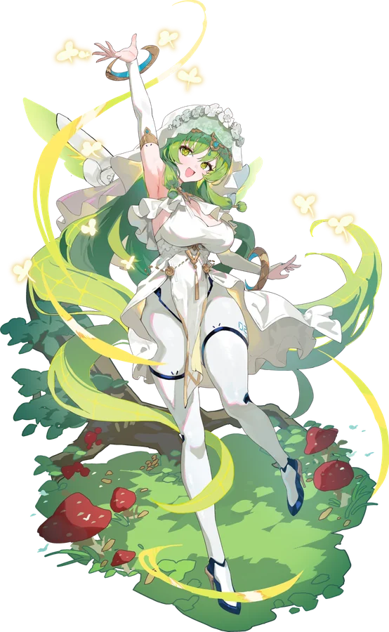
钢羽森姬

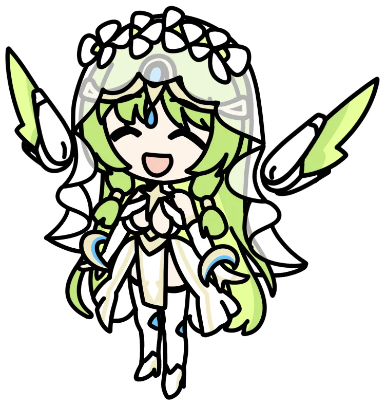
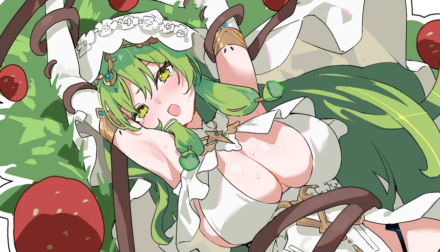
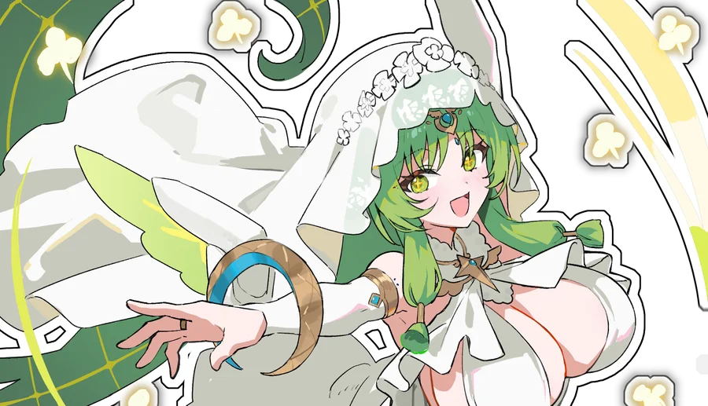
“茉莉，你听懂了吗？”蓝海晴叮嘱道。 茉莉正仔细打量着自己的穿着，“嗯？这是什么形态？” “海晴海晴！我怎么会有翅膀啊？！”茉莉好奇地扭头看着自己的小翅膀，还能自己控制着扑棱一下。 蓝海晴皱了皱眉头，她感觉茉莉是没听懂自己刚才的话，不过也无所谓了，毕竟茉莉就是这样的孩子。 “你在这个故事里扮演的是大妖精——一种古代遗留下来的超级科技。”蓝海晴又细心解释了一遍。 “懂了懂了！我就要在故事里扮演这个妖精，用伪装救出那个孩子对吧？对了对了，还要尽可能协助酒吧的姐姐！”茉莉叽里咕噜地突然说了一堆。 蓝海晴笑了笑，这不是记得挺好的吗？
共 17 个表情，点击可放大。
官方 wiki 没有这角色的 /获取 页，头像、名片、卡牌、骰子的完整清单暂缺；下方「档案」里保留了画廊中的零散素材。
人物传记
茉莉会经常把璐璐当做有害垃圾清理，虽然遭到了璐璐多次抗议，但还是乐此不疲。
皮肤故事
节日盛装
“呃，还有几分钟就过节了，但完全没有实感啊。”露佳伸了个懒腰。 “不过还要加班就很真实。”露佳下意识的吐槽道。 “马上就结束了。海晴他们说是半小时前就到我家了。” 想到这里露佳已经迫不及待想回家了。 “茉莉跑哪里去了？”露佳把杯子放下，准备用通信装置定位一下茉莉的位置。 就在此时，突然办公室的灯全部熄灭，露佳陷入了一片黑暗中。 “唉？停电？不对啊？这楼从来没停过电啊？”露佳在黑暗中拿起通信器准备紧急呼叫茉莉。 “啪嗒！”不远的地方传来了一声诡异的响声。 “什..什么东西！”只见一道绿光缓缓靠近露佳。 “咚咚！哒哒哒！！！”突然一张大脸凑到了露佳的脸上。 “啊啊啊啊啊啊啊啊！！！”露佳吓得坐在了地上。 此时灯光又亮了起来，茉莉正穿着穿着充满节日气氛的服装站在露佳的脸前。 “啊啊~露佳露佳~茉莉好看吗？”茉莉瞪着大眼睛看着坐在地上的露佳，她眼里满是想要被表扬的渴望。 “噗..哈哈哈哈哈，真是的…”露佳看见打扮成这样的茉莉突然笑出了声。 “好看，很有节日气氛。”露佳说道。 “嘿嘿，专门为你准备的。”茉莉高兴地使劲晃动手里的铃铛，并且用脸颊蹭着露佳的额头。 “嗯，谢谢。节日快乐。”露佳摸着茉莉的头说道。
冲浪海岸
“防晒霜、防水袋、毛毯……” 露佳检查着去海边的装备，旁边的茉莉则在帮她整理物品。 “呃，这不是玲玲的冲浪板么，怎么还在这里？”露佳看到仓库里的冲浪板发出了疑问。 “冲浪板？”茉莉突然来了兴趣，眼睛亮了起来。 “就是用这个板子，可以在海上利用海浪漂浮滑行。” “我要玩！我要玩！”茉莉吵闹起来。 “你都没学过基本的知识，万一掉海里了我可救不起来你。”露佳否定了茉莉的想法，继续收拾东西。 “好了！学会了！”茉莉开启了网络下载模式，用了不到10秒的时间搜索完了网上所有的冲浪课程。 “呃，你这临时下载下来的有什么用啊。算了，反正明天玲玲也要去，让她教教你好了。就算你掉海里，那怪力女也能把你捞起来。” “好耶！玲玲教我！我一定会很快学会的！” 茉莉像只快乐的小狗一样开心地手舞足蹈。
后厨能手
每隔几个月，凰区的社区活动会有几天是美食一条街。 各种各样的传统小吃在这几天里集中出现在大街小巷，为本就热闹的街区带来更多的人气。 茉莉作为住在附近社区的一员，当然也会作为志愿者加入到这个由社区共同举办的活动中。 不过，因为茉莉毛手毛脚熊孩子的属性深得人心，大家只能让她做一些招揽顾客的工作。 除非真的忙不过来，才会被允许让茉莉去后厨帮忙。 每当这个时候，你就会看见一个身手敏捷的绿油油的家伙在人群中来回穿梭，帮厨房忙前忙后。 充满元气的她总能快速地把厨师需要的东西和客人的点餐送达。 至于中途掉落的某些材料和餐食呢？你既然已经让茉莉帮忙了，还介意这些琐碎的事情吗？
钢羽森姬
“茉莉，你听懂了吗？”蓝海晴叮嘱道。 茉莉正仔细打量着自己的穿着，“嗯？这是什么形态？” “海晴海晴！我怎么会有翅膀啊？！”茉莉好奇地扭头看着自己的小翅膀，还能自己控制着扑棱一下。 蓝海晴皱了皱眉头，她感觉茉莉是没听懂自己刚才的话，不过也无所谓了，毕竟茉莉就是这样的孩子。 “你在这个故事里扮演的是大妖精——一种古代遗留下来的超级科技。”蓝海晴又细心解释了一遍。 “懂了懂了！我就要在故事里扮演这个妖精，用伪装救出那个孩子对吧？对了对了，还要尽可能协助酒吧的姐姐！”茉莉叽里咕噜地突然说了一堆。 蓝海晴笑了笑，这不是记得挺好的吗？
画廊其他素材
本地未收录该角色的语音台词。